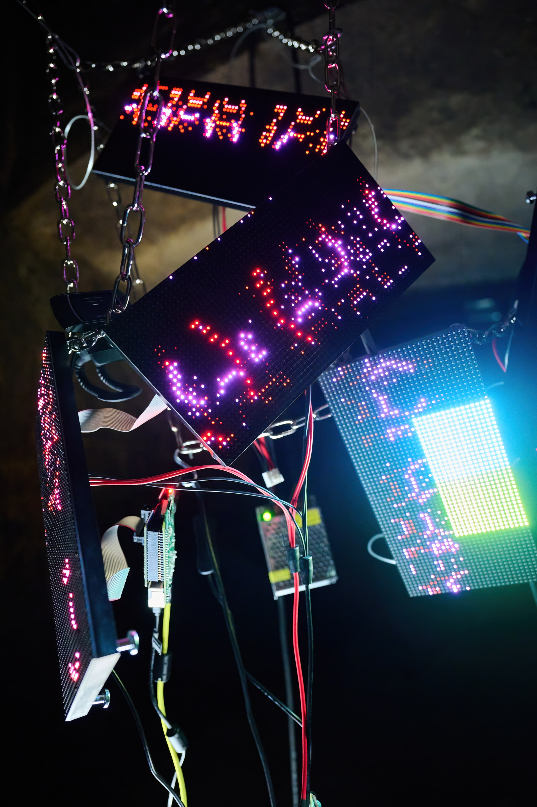
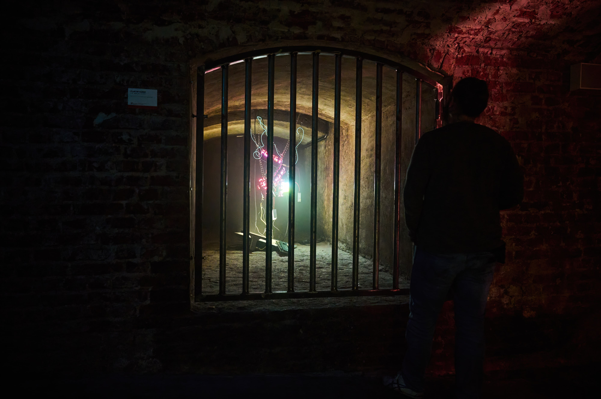

You make me screen - exhibition at Arc Gallery, Tresor West. Dortmund, Germany.




Pictures by Florian Duerkopp
Screens are nowadays and everyday more part of our daily lives and even connected somehow to our bodies. We touch screens, communicate and feel through screens. Screens can also be flashlights, visuals in the night or kiosk publicity. ‘You make me screen’ it’s a hacky way to show as a mirror that you are also part of the screen. In the sense that narrative and perception is not linear, we go and we see and we share what we feel. Screens as new windows that can go beyond what is a routine. To create universes (chaos and cosmos) that can open new and multiple ways to see and understand the world.
Technical specifications: Raspberry pi, led panels, Python, opencv, chains, ELwire.